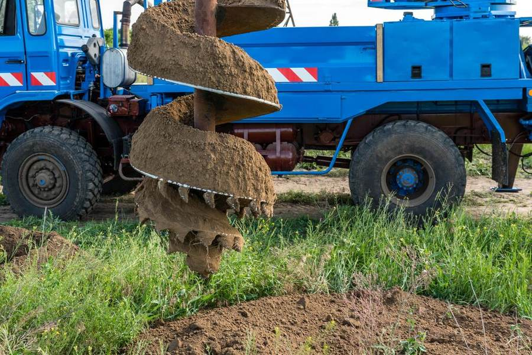

Serving Faerie Glen, Moreleta Park, Garsfontein, Wapadrand, Waterkloof, Silver Lakes and surrounding suburbs. Free site assessment, same-week quotes, and a full drill-to-tap service.
Call Now WhatsApp Us
On-site drilling equipment used for residential borehole installations in Pretoria East.
Load shedding and municipal water restrictions have made a private borehole one of the best investments a Pretoria East property owner can make. Here's what you get when you work with us.
Pretoria East sits on the Quartzite Ridge, which typically yields 1,500–3,000 L/hour at 60–90m. We know the ground here — no guesswork.
Full drilling, casing and pump packages typically range from R40,000–R140,000 depending on depth and yield. You'll get a written quote before we start.
Every borehole is tested for yield and water quality before handover, so you know exactly what you're getting.
Most residential boreholes are drilled, cased and pump-fitted within 1–3 days once we're on site.
We evaluate your property, check local geology and recommend the best drill point.
Rotary air drilling to target depth, with steel or PVC casing installed for a stable borehole.
We measure sustainable yield and test water quality so you know what you're working with.
Submersible pump installation, electrical connection, and a full handover report.
Most residential boreholes are drilled, cased and fitted with a pump within 1–3 days once we're on site, depending on depth and ground conditions.
In most residential cases you don't need council approval to drill, but you are required to register the borehole with the Department of Water and Sanitation once it's in use. We can guide you through this during your site assessment.
Pretoria East sits mostly on the Quartzite Ridge, which typically yields 1,500–3,000 litres per hour at 60–90m depth, though exact yield depends on your specific property and suburb.
A complete residential package — drilling, casing, pump installation, and yield/quality testing — typically costs between R40,000 and R140,000, depending on depth and equipment. See our services and pricing page for a full breakdown.
Not automatically — every borehole should have a water quality test done before use for drinking. We include this test as part of our standard packages, with filtration recommended where needed.
Get a free, no-obligation site assessment this week.
Request Your Free Quote